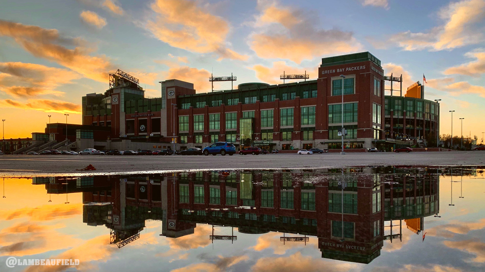
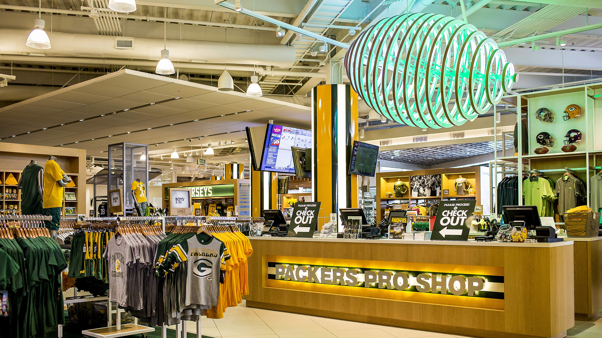
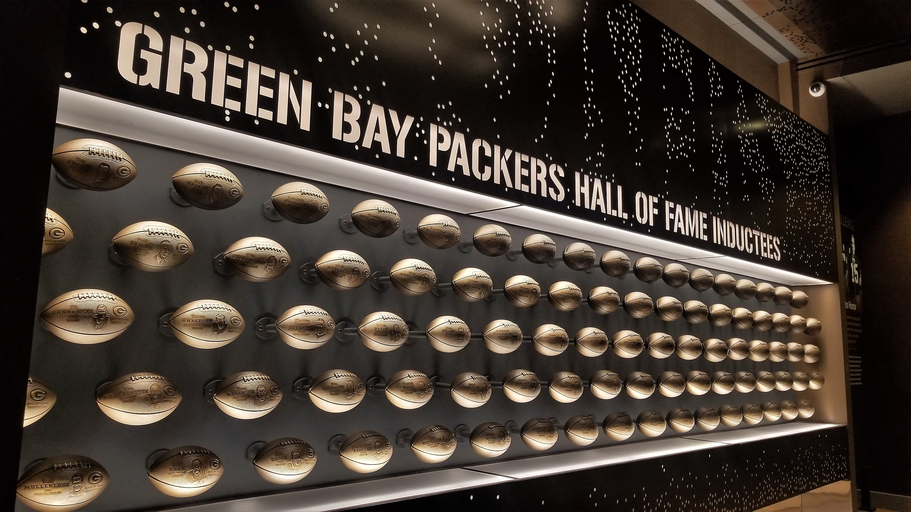

Lambeau Field
Lambeau Field is an outdoor athletic stadium in the north central United States, located in Green Bay, Wisconsin. The home field of the Green Bay Packers of the National Football League, it opened in 1957 as City Stadium, replacing the original City Stadium at Green Bay East High School as the Packers' home field. It is the oldest stadium with an NFL team in continuous residence but has been much enlarged since opening in 1957.
- Compacity: 81,441
- Nickname: The Frozin Tundra
- Owners: THE FANS! The only team in any major professional sport to be owned by the fans not some billionair!
Packers Pro Shop
The Packers Pro Shop is located inside Lambeau Field in Green Bay, Wisconsin. It is open Monday through Friday from 9 AM to 7 PM, Saturday from 9 AM to 6 PM, and Sunday from 10 AM to 5 PM. The shop has special hours for holidays, training camp, and game days.
- Jerseys
- Hats/headwear
- Jackets/Sweatshirts
- Collectables
Packers Hall Of Fame
The Packers Hall Of Fame is located inside Lambeau Field. A trip to Lambeau Field is not complete without a visit to the Packers Hall of Fame, where fans can experience the legacy of the greatest story in sports. With dynamic displays and interactive exhibits, the Hall of Fame always has something new to discover. Embark on a journey through more than a century of football history by exploring the team’s humble beginnings, sitting at Vince Lombardi’s desk and getting goosebumps in the 13 Below Ice Bowl Theater.Celebrate each era of Packers greats, relive the heart-pounding victories and honor the greatness of each championship in the Hall of Fame’s trophy room. With one-of-a-kind artifacts sourced from players of the past and present, engaging galleries and highlight reels, learn why the story of the Green Bay Packers continues to inspire fans of all generations.
- Hall of Fame and Stadium Tours
- History Theater
- Countless galleries and showrooms/trophy rooms